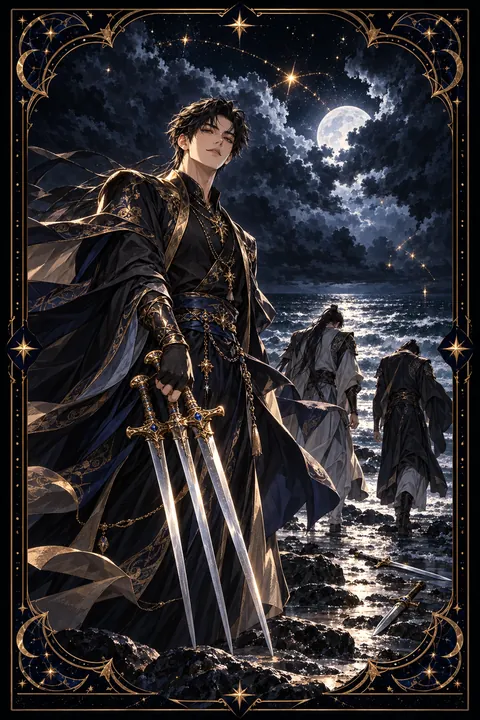

검 5 카드 — 이기고도 잃는 갈등의 끝
검 5 카드 한눈에 보기
검 5 카드 상징 읽기

동네보살의 카드 그림은 전통 라이더–웨이트 덱의 뜻을 새 그림으로 옮긴 것입니다. 아래 상징 설명은 전통 덱의 그림을 기준으로 합니다.
거친 바람이 불어 구름이 찢겨 나가는 하늘 아래 한 남자가 비웃는 듯한 표정으로 세 자루의 검을 챙기고 있습니다. 싸움에서 이긴 쪽이지만 그 모습에서는 당당함보다 얄팍한 만족이 느껴집니다.
땅에 버려진 두 자루의 검은 패배한 쪽이 내려놓은 무기이자 잃어버린 자존심을 상징합니다. 멀리 바닷가를 향해 걸어가는 두 사람은 고개를 숙이고 있으며 이긴 사람과의 관계가 이미 끊어졌음을 보여 줍니다.
들쭉날쭉하게 찢긴 구름과 스산한 하늘은 다툼이 남긴 불편한 분위기를 나타냅니다. 이 카드는 승리와 패배의 모습을 한 장면에 담아 두고 과연 누가 진짜 이긴 것인지 묻습니다. 무엇을 얻었는지보다 무엇을 잃었는지를 돌아보게 하는 그림입니다. 이긴 남자의 손에 들린 칼이 오히려 짐처럼 보이는 것도 이 카드가 남기는 여운입니다. 바람에 흩날리는 머리카락과 옷자락은 아직 가라앉지 않은 감정의 소용돌이를 보여 줍니다.
검 5 카드 정방향 뜻
정방향 검 5는 갈등과 다툼, 그리고 이기고도 허전한 승리를 뜻합니다. 말다툼이나 경쟁에서 상대를 꺾더라도 그 과정에서 관계와 신뢰를 잃게 될 수 있다는 경고가 담겨 있습니다.
이 카드는 싸움 자체보다 싸우는 방식을 돌아보게 합니다. 자신이 옳다는 것을 증명하는 데만 몰두하고 있지는 않은지, 이기기 위해 상대에게 상처를 주고 있지는 않은지 살펴보세요. 반대로 자신이 패배한 쪽이라면 억울함에 계속 매달리기보다 에너지를 아끼는 선택이 나을 수 있습니다.
모든 싸움에 응할 필요는 없습니다. 지금의 다툼이 정말 중요한 문제인지 스스로 물어보고 그렇지 않다면 과감하게 물러서는 것이 현명합니다. 꼭 지켜야 할 원칙이 걸린 문제라면 감정을 빼고 사실과 해결책 중심으로 이야기하세요.
검 5 카드 역방향 뜻
역방향 검 5는 다툼이 지나간 뒤 화해와 수습의 기회가 찾아오는 흐름입니다. 싸움의 열기가 식으면서 서로가 잃은 것을 돌아보게 되고 관계를 회복하려는 마음이 생겨납니다.
다만 묵은 앙금이 남아 있다면 화해의 손길이 쉽게 닿지 않을 수 있습니다. 지난 일을 곱씹으며 속으로 되갚을 기회를 노리고 있다면 그 마음이 오히려 자신을 더 지치게 만듭니다. 끝난 줄 알았던 갈등이 다시 불거질 가능성도 있으니 예민한 주제는 조심스럽게 다루는 것이 좋습니다.
먼저 사과하거나 손을 내미는 것은 패배가 아닙니다. 틀어진 관계를 수습하는 사람이 결국 갈등을 진짜로 끝맺는 사람입니다. 짧은 사과나 안부 인사 하나로도 굳어 있던 분위기가 풀릴 수 있습니다. 지난 싸움에서 배운 점을 정리해 두면 비슷한 갈등을 미리 피할 수 있습니다.
연애에서 검 5 카드
혼자인 시기라면 경쟁자와의 신경전이나 쓸데없는 자존심 때문에 다가온 인연을 놓치기 쉽습니다. 마음에 드는 사람 앞에서 강한 척하기보다 꾸밈없는 모습을 보여 주는 쪽이 오래 기억에 남습니다.
연인과 함께하는 중이라면 작은 말꼬리 잡기가 기싸움으로 번질 수 있습니다. 시비를 끝까지 따지는 대화는 설령 이긴다 해도 둘 사이에 찬 바람만 남깁니다. 언성이 높아지려 하면 잠시 멈추고 상대가 무엇에 서운했는지 먼저 물어보세요. 지난 잘못을 새삼 끄집어내는 말버릇은 특히 조심해야 합니다. 뒤집힌 카드가 나왔다면 다툰 뒤 화해할 틈이 열리는 흐름이니 먼저 다가가는 용기를 내 보세요. 한발 물러서는 쪽이 결국 관계를 지키는 사람이 됩니다. 다툼 뒤에 건네는 따뜻한 한마디가 오래 기억에 남습니다.
재회·속마음 질문에서 검 5 카드
재회 질문에서 검 5가 나왔다면 이별 무렵의 말다툼과 서운함이 여태 가라앉지 않았다고 읽습니다. 누구 탓인지 가리려는 마음이 살아 있는 한 다시 마주 앉아도 예전 싸움이 고스란히 재연되기 쉽습니다. 다시 잇고 싶다면 그때 자신이 던진 말 가운데 지나쳤던 것부터 인정하는 데서 출발하세요. 카드가 뒤집혀 있다면 감정의 날이 무뎌져 화해의 문이 조금씩 열리는 중입니다. 답을 서두르지 말고 상대가 마음을 추스를 시간을 넉넉히 내어 줄 때 끊어졌던 믿음이 조금씩 다시 이어집니다. 같은 다툼을 되풀이하지 않도록 스스로 지킬 약속 하나를 정해 두면 대화가 한결 편안해집니다.
일·금전에서 검 5 카드
일과 직장에서는 경쟁과 갈등이 거세지는 시기를 뜻합니다. 성과를 두고 공을 다투거나 의견 충돌이 감정싸움으로 번질 수 있습니다. 이기기 위해 무리한 수를 쓰면 당장은 이득을 보더라도 평판과 신뢰를 잃게 되니 정정당당한 방식을 지키는 것이 좋습니다. 불필요한 신경전에는 거리를 두고 기록과 사실에 근거해 대응하세요. 억울한 일이 생겨도 공개적으로 맞서기보다 일대일로 차분하게 푸는 편이 뒷말을 줄입니다.
주머니 사정 쪽에서는 돈 때문에 다른 사람과 갈등이 생길 수 있습니다. 거래나 약속은 글로 남겨 두고 작은 이익을 위해 관계를 해치는 선택은 피하는 편이 안전합니다. 이익보다 사람을 남기는 선택이 긴 안목에서는 더 큰 자산이 됩니다.
검 5 카드는 예일까 아니오일까
원하는 것을 얻더라도 그 과정에서 관계나 신뢰를 잃는다는 카드여서 아니오 쪽에 무게를 둡니다. 뒤집혀 나온 경우라면 갈등이 가라앉고 화해의 여지가 생기므로 먼저 손을 내민다면 조건부로 바뀝니다.
자주 묻는 질문
검 5 카드 역방향은 나쁜 뜻인가요?
역방향 검 5는 다툼이 지나간 뒤 화해와 수습의 기회가 찾아오는 흐름입니다. 싸움의 열기가 식으면서 서로가 잃은 것을 돌아보게 되고 관계를 회복하려는 마음이 생겨납니다.
검 5 카드가 연애 질문에 나오면요?
혼자인 시기라면 경쟁자와의 신경전이나 쓸데없는 자존심 때문에 다가온 인연을 놓치기 쉽습니다. 마음에 드는 사람 앞에서 강한 척하기보다 꾸밈없는 모습을 보여 주는 쪽이 오래 기억에 남습니다.
타로 카드는 어떻게 뽑나요?
타로 카드 페이지에서 78장을 섞으면 그중 22장이 펼쳐집니다. 마음이 가는 세 장을 고르면 과거·현재·미래 자리에 놓이고, 한 장씩 뒤집어 자리와 방향에 맞는 풀이를 읽습니다. 정방향과 역방향은 섞는 순간 정해집니다.